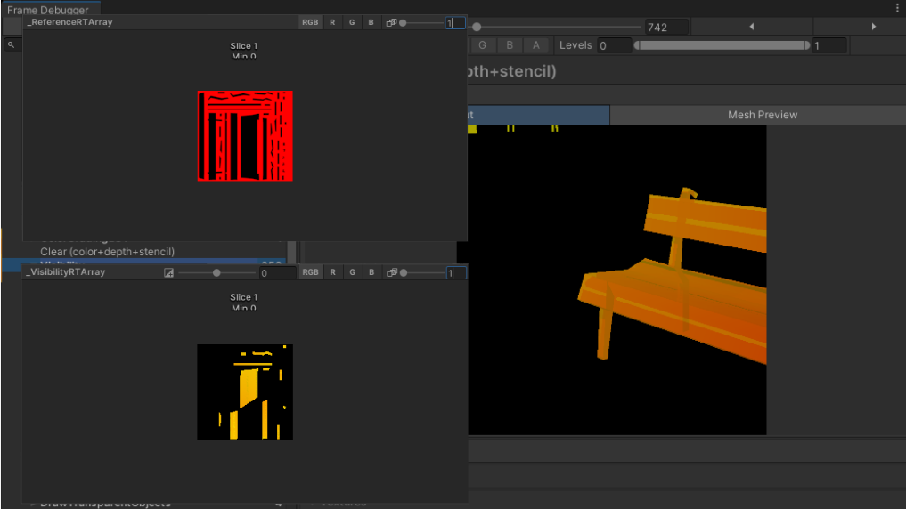
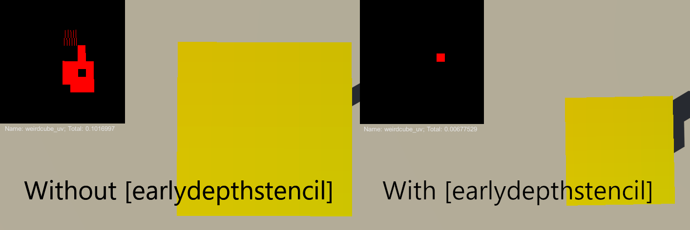

99% Visible: GPU-based Visibility System in “A Search For a Shiny Thing”
Introduction
In 2024, I co-founded a tiny indie studio called The Notlanders and for the next two years I worked on a photography adventure game titled “A Search for a Shiny Thing”. Although the project is currently on indefinite hiatus, it's development presented many interesting challenges and the tech behind the photography system I developed for the game remains one of the pieces of work I'm most proud of. One of our key design goals for photography was accuracy. We wanted the game to identify every photographable object in the frame, even when only a portion of it is visible, and be able to determine whether enough of the object is in the frame to be recognizable. In this article, I will walk you through the GPU-driven solution I developed to make that possible.
The Problem
Most photography games need a way to determine what the camera “sees” when it takes a photo. Let's call this the visibility system. The purpose of a visibility system, thus, is to identify which objects are visible within the camera's frame and gather information about each of them. We wanted the system to work with many different types of objects: characters, buildings, graffiti, plants, etc. It was important for us not only to know whether the object is visible, but how much of it is visible. If only 15% of a bench appears in the frame, the game should acknowledge that the player photographed it, while also recognizing that it was only partially captured.
The obvious question is: how do you actually implement that?
Let's step away from photography for a second and look at how games implement AI sight perception. A typical implementation would first perform a broad-phase cull based on distance and NPC's field of view. If the player falls within the NPC's view cone, the game performs line-of-sight checks by casting rays toward visibility points on the character (typically bones). Depending on how many rays hit the target without being occluded, the player is considered (in)visible. This approach works extremely well for certain genres, particularly stealth games, and unsurprisingly many photography games do something very similar.
For our use case, raycasting had two major shortcomings. From a workflow perspective, it would require a significant amount of tedious manual labor, unless we come up with a system to automatically assign visibility points to objects. I briefly considered making such a tool, but balancing accuracy and performance quickly became a concern.
The second issue is that raycasting only measures visibility. In real-life photography, getting the subject into the frame is only part of what makes a good photograph. Lighting, focus, and composition also influence the result, and we wanted to use these elements to create interesting gameplay scenarios. Ideally, in-game photography should have enough depth to be a fun toy to play with on its own. Building separate systems for evaluating lighting and focus was certainly possible, but after some experimentation I thought of a way to solve several problems at once.
The Solution
What does it actually mean for an object to be “seen”? Since we wanted to quantify how much of an object is visible, what we were really measuring was its visible surface area. “There has to be a way to do this on the GPU,” I thought.
One way to think about it is that every rendered fragment represents a patch of the object's surface. If a part of the object is outside the frame it will be clipped during rasterization, and if it's occluded, it's eliminated by the depth test. The approach also has a naturally self-adjusting granularity: the less screen space an object occupies, the less fragments will be rendered (a limitation, but one that aligns with human perception). From a performance standpoint, the GPU offers the obvious advantage of processing many objects in parallel, if rendered in a batch.
That still leaves one important question: how do you correlate rendered fragments with the object's surface area? Surface area is innately a two-dimensional concept, which led me to think about UV mapping. It's a process that unwraps a 3D mesh into a 2D layout, which represents the entire surface area of the object. The UV layout can then be rendered as a texture, providing us with a reference of what 100% visibility looks like. While texel density will vary, modeling software's tools will produce sufficiently uniform results for measurement purposes. All that remains is to somehow record which fragments were rendered and compare the result with the reference.

Fortunately, since Shader Model 5, fragment shaders can perform random reads/writes to UAV (unordered access view) textures. Using the mesh's UV coordinates as index into the texture, each visible fragment can write information to the pixel corresponding to its position. Comparing the resulting texture against the reference is pretty straightforward and can be done in a compute shader for efficiency.
The fragment shader below shows the core idea.
RWTexture2D<float2> output;
[earlydepthstencil]
float3 frag(v2f i) : SV_Target
{
...
float lightness = ColorToLStar(color);
float focus = SampleCoCTexture(i.positionNDC);
uint2 pixel = uint2(i.uv * _ReferenceSize);
output[pixel] = float2(lightness, focus);
// return debug color
}Besides visibility, the output texture also encodes lightness and focus.
Lightness measures how well illuminated the object is, taking into account direct sunlight, shadows, and additional lights. To compute it, I shade the fragment using a simplified version of the lighting code used in the main forward pass. It takes into account real-time lighting (lambertian diffuse), baked lighting, and shadow maps. I convert the RGB color of the fragment to luminance and then to perceived lightness (CIELAB L*). The last step is optional, but it produces values that better match human perception.
Focus, as you can guess, measures how far out of focus the object is. I'm using Unity's depth of field post-processing feature, which allows me to change the focus point through code and creates a globally accessible “circle of confusion” texture that can be sampled in a shader. This texture encodes 0 as maximum near blur, 1 as maximum far blur, and 0.5 as the sharpest point. I remap the value so that 0 is maximum blur and 1 is perfect focus.
One last detail I want to talk about relating to the snipped of code is the [earlydepthstencil] attribute, which is included for a reason. Early on, I noticed that when the camera was positioned to look at an object from an angle where one part of the object clearly obscured some other part of it, the fragments that should have failed the Early-Z test were still being rendered and written to the output texture. If you've done graphics programming before, you may know that modifiying depth (or using clip/discard) in a fragment shader disables Early-Z because the GPU can no longer assume the depth value will remain unchanged. Well, as it turns out, writing to a UAV texture also disables Early-Z. The [earlydepthstencil] attribute saves the day and forces Early-Z back on. This was a frustrating bug to deal with, because it stems from a rather obscure driver behavior. Had it not been for an article I found online that briefly mentioned this behavior, honestly, I might've never solved it!

Taking a broader look at the system, here is a step by step breakdown of the whole pipeline :
- An artist creates a simplified visibility mesh with a custom UV layout and bakes the UVs into a low-resolution reference texture.
- Photographable objects subscribe to Unity's built-in OnBecameVisible and OnBecameInvisible callbacks. When an object enters the camera frustum, it's added to the list of candidates.
- Each candidate is assigned a unique ID, which is passed to the GPU as a uniform.
- A custom render pass binds an RWTexture2DArray as the UAV output target.
- The render pass filters and draws every candidate object in a batch.
- The fragment shader writes data for every visible fragment to a slice of the texture array using its UVs and ID for indexing.
- A compute shader is dispatched, which accumulates the visibility, lightness, and focus values for each slice of the texture array.
- The render pass requests asynchronous readback from the GPU.
- When the read request is complete, currently visible pixels are compared to maximum visible pixels. Any object with a visibility greater than zero is added to the list of objects currently in frame.
Conclusion
The result is a GPU-driven system that can compute, in real-time and with relative accuracy, what % of an object's surface area is visible, how well lit it is and whether it's in focus. It's able to scale well into tens of objects while staying under 1 ms cost on mid-range hardware. There is, however, one goal the system failed to reach and that's workflow automation. While the setup is fairly minimal, the workflow for creating photographable objects involves manually exporting a reference texture and assigning it in engine, which can certainly be improved. There's more to be done if we ever pick the project back up again, but I can say that, to my best knowledge, nobody has ever done anything like this before, and the feeling of building something original has been one of the most rewarding parts of the project.
Future Work
There is a potential alternative approach I've been thinking about that wouldn't require the additional steps of creating a UV layout specifically for visibility and exporting a reference texture.
Since meshes are composed of triangles, it's easy to calculate the total surface area, or the area of a specific patch as long as you know which triangles make it up. If I render the SV_PrimitiveID (assuming the order is the same on the CPU and remains stable across frames), or a custom triangle index (passed flat from the vertex shader to the fragment shader), into an offscreen buffer or UAV texture as I'm doing now, I could calculate the surface area of the visible triangles.
However, I'm not sure if I could make it performant enough. I'd have to iterate over tens or hundreds of thousands of pixels, deduplicate the triangle IDs, and then calculate (or look up) and sum the surface area of each unique triangle. Instinctively, this feels too expensive to do on the CPU, but if the deduplication step can be performed in a compute shader, it might be a viable approach.